End-to-end QA workflow: acceptance criteria → test plan → exploratory testing → automation → self-healing execution → defect logging
specs_qa/dashboard-member.md
(DM-027–DM-033) and Test/dashboard-member/tests/quick-timer.spec.ts already regression-test the
Dashboard's Quick Timer widget: project/task gating, the start/pause/resume/stop lifecycle, and that widget's own
filed gaps (#654/#655/#656). This module covers the standalone /timer page only — keyboard shortcuts,
the stale-timer dialog and hard auto-stop, the sidebar widgets (Daily Progress with 7-day grid + gamification
milestones, Pinned Favorites, Recent Activity, Yesterday summary), and the Jira issue picker, none of which exist
on the dashboard widget. See specs_qa/timer-member.md's "Relationship to the Dashboard Quick Timer QA
pass" section for the full boundary.
This module covers the standalone Member Timer page at /timer: access & prerequisites, starting a
timer (project/task selection and gating), the active-tracking view (ring, note field, Jira picker, pause/resume/stop),
keyboard shortcuts, the stale-timer dialog and hard auto-stop, the sidebar widgets (Daily Progress, Pinned Favorites,
Recent Activity, Yesterday summary), and cross-cutting workspace-scoping/refetch/isolation behavior. Acceptance
criteria are sourced from docs/qa/user_stories/Timer_Member.md (33 ACs, AC-1–AC-33,
across 7 numbered sections), grounded in docs/specs/timer.md, docs/specs/timelogs.md,
packages/contracts/src/dto/timer.dto.ts, apps/client/src/features/timer/, and live
exploration. The test plan (specs_qa/timer-member.md) maps all 33 ACs to 63 scenarios
(TM-001–TM-063).
The source doc's own header notes a live discrepancy versus its own earlier verification: at an earlier date,
peter123@yopmail.com / "Integritas" had zero assigned projects, confirming AC-4's "no projects assigned"
empty state live. This session (and this pass's own exploratory run) found the account now has one assigned project
("Aimswebplus"), which let AC-5–AC-16's active-timer flow be grounded live end-to-end, but means AC-4's empty state
is no longer reproducible on this account — flagged rather than silently re-asserted, per the
playbook's "if something looks stale, say so" guardrail. See TM-005 in section 6.
| Artifact | Path |
|---|---|
| Acceptance criteria (33 ACs) | docs/qa/user_stories/Timer_Member.md |
| Test plan (63 scenarios / 7 feature areas) | specs_qa/timer-member.md |
| Exploratory results | specs_qa/timer-member-exploratory-results.md |
| Exploratory screenshots | specs_qa/exploratory/timer-member/ (20 screenshots) |
| Automation suite (pages + tests) | Test/timer-member/ (2 page objects, 5 spec files, 36 tests) |
| Healing log / run history | Test/timer-member/HEALING_LOG.md |
| Filed defect | KAN-15 — caveated, not confirmed as a product regression |
Executed via Playwright MCP (real browser, Chromium) against the live production Client app. Of the plan's 63
scenarios: 37 passed live, matching the test plan's documented expected result verbatim
(button labels, banner text, hint text, tab-title formats, tooltip text, empty-state copy), and 26 were not
verified because the seeded test account (peter123@yopmail.com, single workspace, one active
project, no Jira connection) cannot produce the required precondition — see section 7 for the
full list and reasons. Zero new defects or copy/behavior mismatches were found during this
exploratory pass — a clean result.
Space with focus outside
any input stopped a running timer via the normal Stop & save flow — confirmed by the tab title reverting from
⏱️ 00:01:55 — Kloqra to plain Kloqra. No gap; the shortcut works as documented.Two real timer entries created during testing were deleted via Time Tracker afterward; the account's Today/Week totals were verified to return to their pre-session baseline (4.51h / 19.17h) after cleanup.
specs_qa/exploratory/timer-member/)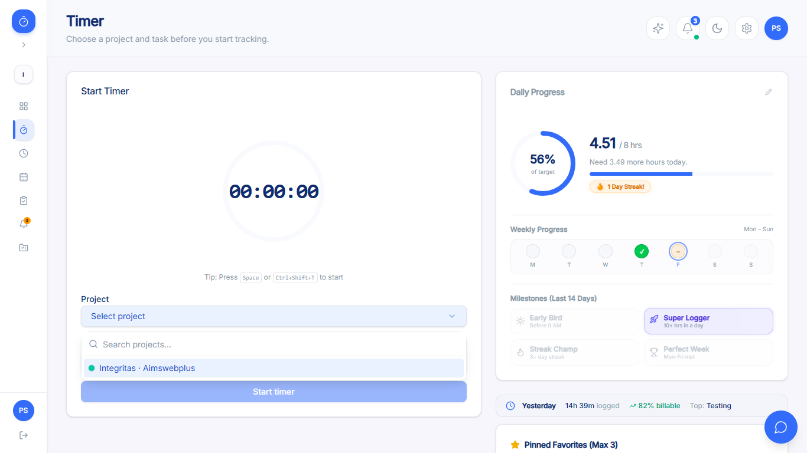
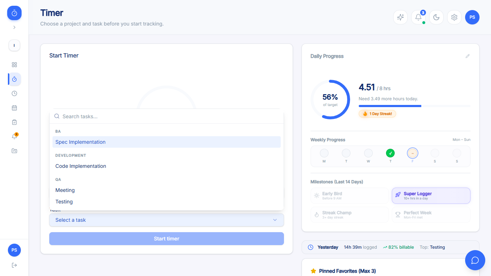
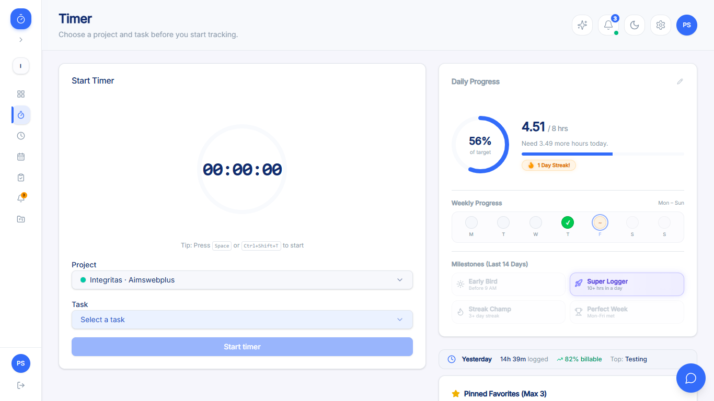
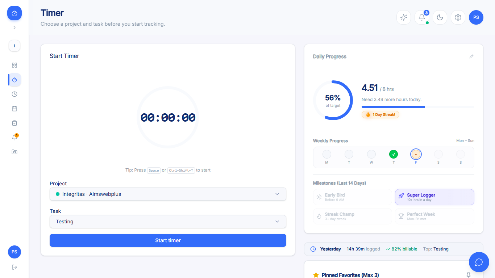
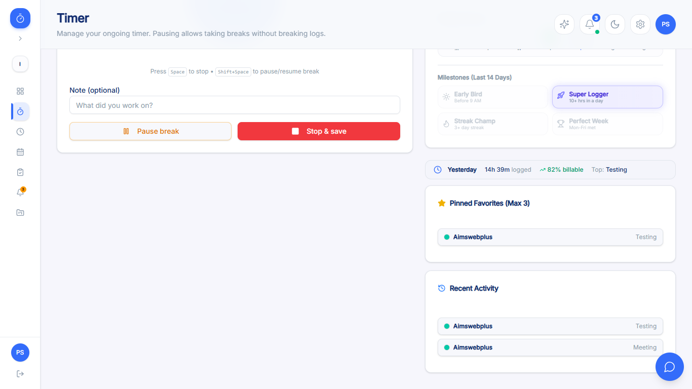
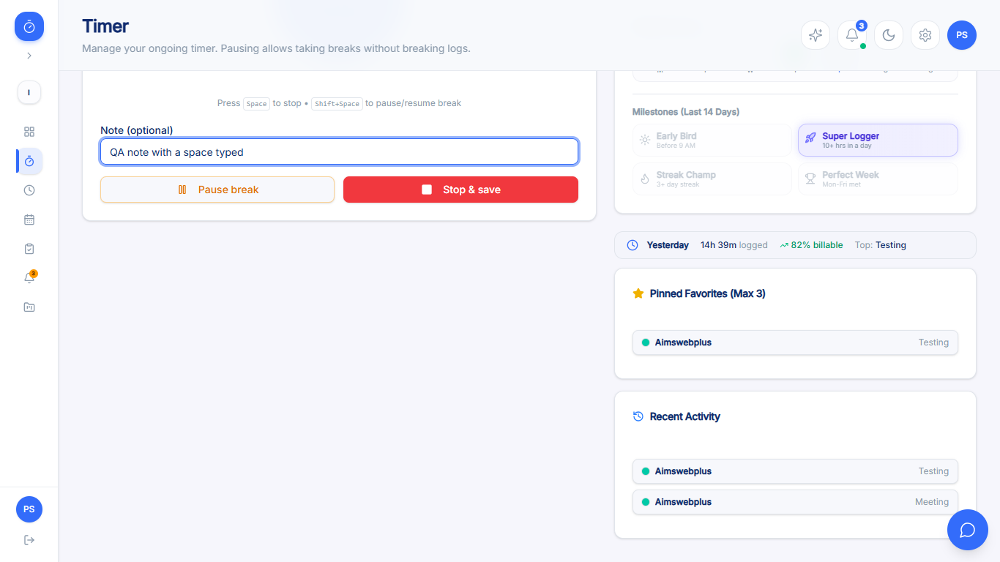
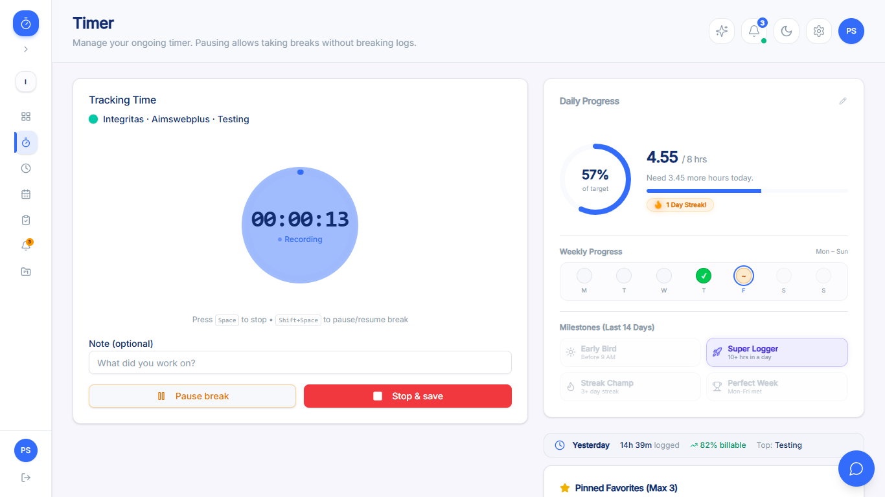
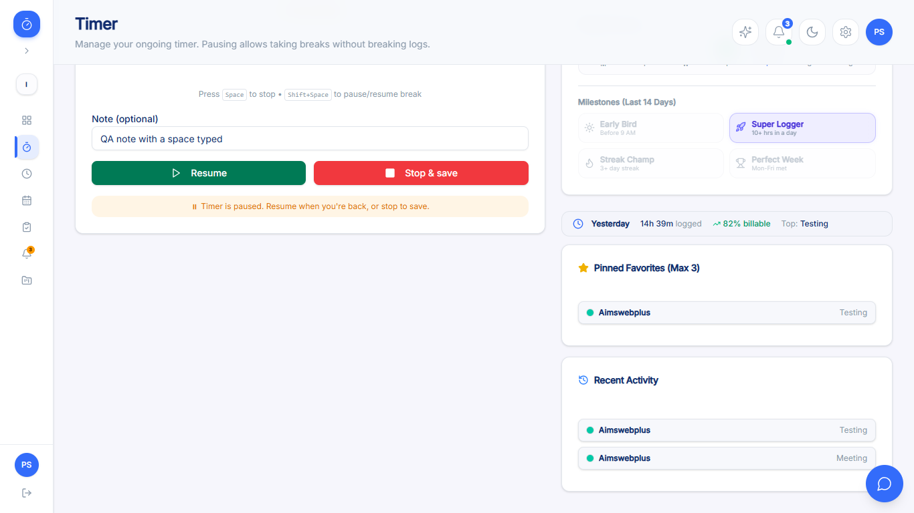
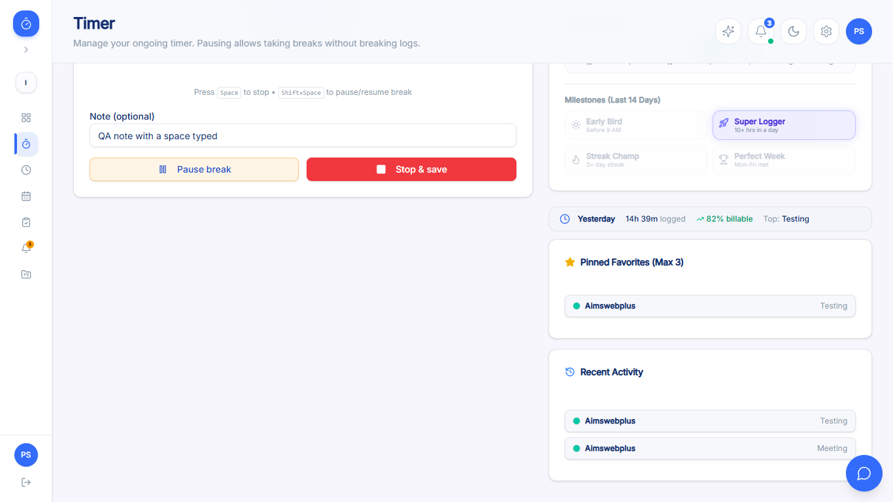
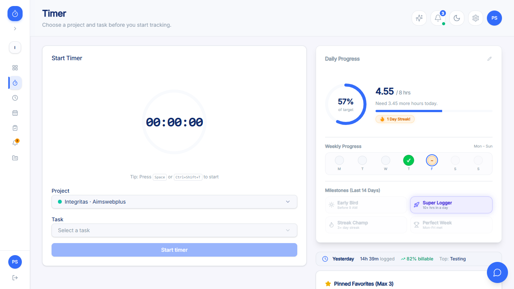
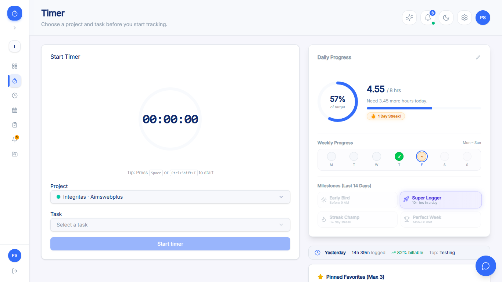
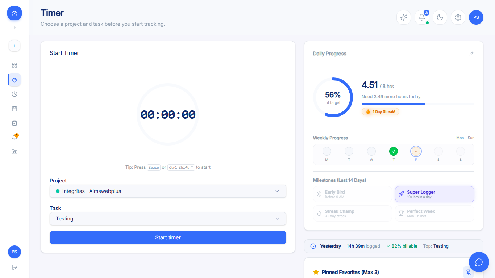
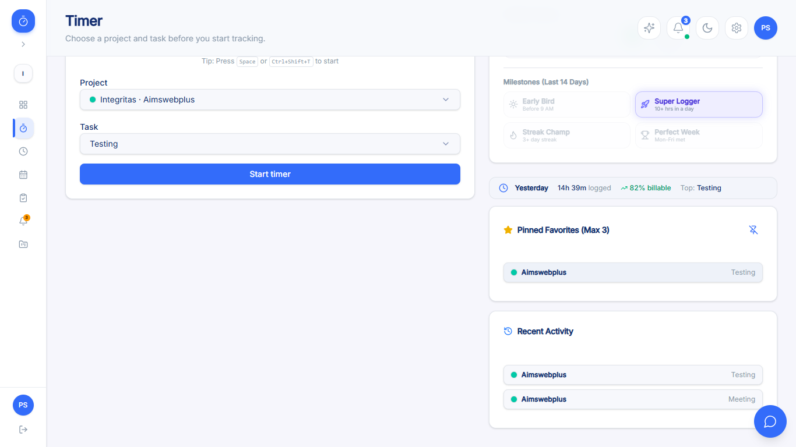
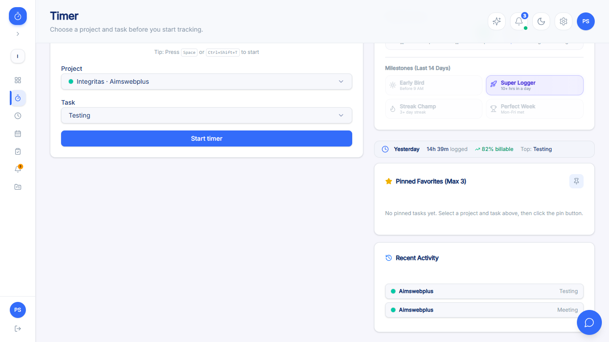
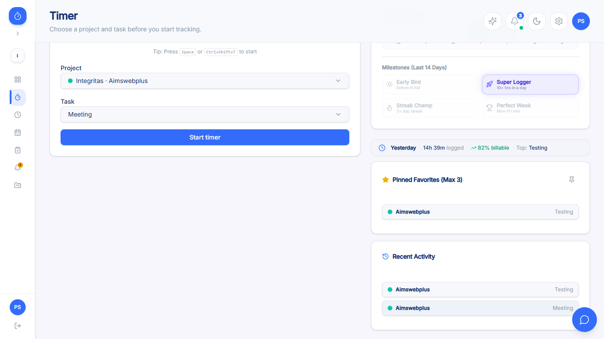
Standalone Playwright suite at Test/timer-member/ (Page Object Model). 1 dedicated page object
(TimerPage) plus a copied LoginPage, 5 spec files, 36 automated tests total, built
directly from the test plan and the real selectors/copy confirmed live in Step 3.
pages/login.page.ts
pages/timer.page.ts
| Spec file | Tests | Covers | ACs |
|---|---|---|---|
tests/timer-controls.spec.ts |
14 | Left-nav navigation, idle/tracking header copy, Task combobox gating + category grouping, Start button
disabled-until-both-chosen, starting switches to Tracking Time, elapsed ring ticking once/sec, pause freezes
elapsed + relabels ring, tracking subtitle format, Note field free text, Pause fires POST /timer/pause
+ banner, Resume continues from accumulated elapsed (not 0), Stop & save resets UI to idle (real mouse click
on the button, closing the exploratory gap around TM-024) |
AC-1, AC-2, AC-5, AC-7, AC-8, AC-11, AC-12, AC-13, AC-14, AC-15 |
tests/keyboard-shortcuts.spec.ts |
10 | Space starts/stops the toggle, Ctrl+Shift+T secondary toggle, Shift+Space pause/resume, shortcuts ignored while typing in the Note field, on-screen shortcut hints (idle + tracking), live tab-title ticking, pause-emoji switch, revert to plain app name on stop | AC-17, AC-18, AC-19, AC-20, AC-21 |
tests/daily-progress.spec.ts |
5 | Daily Progress gauge + "Need more hours" hint update live while a timer runs, inline daily-goal edit open/Cancel (no persistence pushed), 7-day Mon–Sun grid with status tooltips incl. weekends, all 4 milestone badges with tooltip text, Yesterday summary strip (hours/billable %/top task) | AC-26, AC-27, AC-30 |
tests/favorites-and-recent.spec.ts |
5 | Pinned Favorites empty-state hint, pin control appears only once both Project and Task are selected, pin/unpin toggles the button and chip, clicking a pinned chip re-populates selectors, Recent Activity chips re-populate and enable Start | AC-28, AC-29 |
tests/cross-cutting.spec.ts |
2 | GET /timer/active polling on mount and after every start/pause/resume/stop action (this test's
mount-fire assertion is the one confirmed finding — see section 5), workspace-scoping
headers (x-auth-scope, x-workspace-id) present on every timer request |
AC-25, AC-31 |
This module's HEALING_LOG.md documents an unusually deep chain of investigation for a single module.
Reproducing the lessons here in full since several are broadly reusable for future modules, not just this one.
The original scaffold logged in fresh via beforeEach for every single test. With ~36 tests plus
retries, this risked (and at least once, definitively did) trip the app's own login rate limit
(5 requests/60s, per acceptance-criteria-login-forgot-password.md AC-3) — which manifests as a
/login redirect instead of /dashboard, a failure that looks like a random, unrelated bug in
whatever test happens to hit the limit. Fixed by adding global-setup.ts (logs in once,
saves storageState.json) and wiring it into playwright.config.ts; removed per-test
login() calls from every spec file's beforeEach. Reusable lesson: any suite scaling
past a handful of tests against a real login form should share one authenticated session rather than re-authenticating
per test.
Same bug class seen in the dashboard-member and login-forgot-password modules. LoginPage.login()'s
post-login toHaveURL(/\/dashboard/) check used Playwright's default 5s timeout, but the actual redirect
occasionally takes longer — bumped to 15s. TimerPage.ensureTimerStopped()'s post-click
toBeHidden() check had the same issue: if the stop-and-save round trip took >5s, the cleanup guard
itself would throw inside beforeEach, silently failing to clean up and letting a leftover timer cascade
into later tests. Bumped to 15s, along with stopAndSave()'s own post-stop assertion.
cross-cutting.spec.ts's "GET /timer/active fires on mount and after every timer action" test starts a
real timer mid-test, then asserts on captured network requests. If that assertion fails (which it does — see the one
remaining real finding below), the test throws before ever reaching its own stop step, leaving a timer running for
whatever test runs next. This produced a large, scary-looking cascade of ~12–30 "unrelated" failures across every
other spec file, each inheriting the leftover active-timer precondition instead of the idle state it expected.
Fixed properly, not per-test: rather than patching this one test's cleanup, an unconditional
test.afterEach was added to all 5 spec files that calls
TimerPage.ensureTimerStopped() regardless of how the preceding test finished — a permanent safety net
against any future test written without its own guaranteed cleanup. Reusable lesson: any suite with tests that
mutate shared, stateful server resources (an active timer, a draft record, a session) needs an unconditional
teardown, not a per-test try/finally that's easy to forget when a new test is added later.
favorites-and-recent.spec.ts) — two
tests asserted toHaveText("Pin current task") on a button whose visible text content is empty; the
real label lives in its title attribute (confirmed via live DOM inspection). Fixed both assertions to
toHaveAttribute("title", ...).TimerPage.selectComboboxOption) — occasionally
timed out clicking a Project/Task option immediately after opening the combobox; recovered on Playwright's built-in
retry, confirmed not a real defect via 2× isolated re-runs (both "fail then pass on retry") plus prior exploratory
confirmation of the same interaction. Fixed by explicitly waiting for the option to be visible before clicking,
instead of relying on retry to paper over the animation timing.waitForTimeout(2500) before asserting the
elapsed-time display changed was occasionally too short; bumped to 3500ms across the 3 affected assertions
(2 in timer-controls.spec.ts, 1 in keyboard-shortcuts.spec.ts).None of fixes #1–4 are product defects — all were test-infrastructure or test-authoring issues, confirmed via direct investigation (live DOM checks, isolated re-runs) before being treated as such, per the "don't file false defects" principle.
This is the authoritative, stable result — reproduced via a clean, isolated final run after all four fix categories in section 3 were applied.
cross-cutting.spec.ts — "GET /timer/active fires on mount and after every timer action"
The mount-time portion of this test fails: expect(mountRequests.length).toBeGreaterThan(0) —
mountRequests.length is 0. Confirmed twice in isolation (2 separate
npx playwright test -g runs, both showing the identical Expected: > 0, Received: 0
failure) — a real, reproducible result, not a flake. However, this surfaced only after the suite
switched to a shared storageState session (fix #1 above) instead of a fresh login per test; it is
plausible the app's client-side data layer treats the timer-active state as "already fresh" within some cache
window carried over from a very recent prior navigation in the same session and legitimately skips a redundant
fetch — which would make this a test-environment artifact, not a product bug. Not deep-dived further per the
2-iteration rule. Filed as KAN-15
with this caveat explicit in the ticket — see section 5.
All 7 recovered cleanly on Playwright's built-in retry and were not chased further; they read as ordinary environment/timing noise (this machine has previously shown memory-pressure-driven worker crashes under load, and general timing jitter under contention is consistent with that pattern — the same category of noise seen on the dashboard-member and login-forgot-password modules' runs). None repeated on a second isolated re-run, unlike the mount-fire failure above, which repeated identically twice and was therefore treated as real.
| Ticket / Reference | Summary | Severity / Priority | Status | Origin |
|---|---|---|---|---|
| KAN-15 | Timer page: GET /timer/active does not appear to fire on /timer page mount |
Minor / Low | Backlog (newly filed this session) | Discovered during automated execution (cross-cutting.spec.ts), confirmed reproducible twice in
isolation. Screenshot evidence attached to the ticket. |
storageState), a test-infrastructure change made to avoid the login
rate limit, not a change to the app. It is plausible the app's client-side data layer legitimately treats the
timer-active state as "already fresh" within a cache window carried over from a very recent prior navigation in
the same browser session, and correctly skips a redundant fetch on this specific kind of mount (one that isn't
"brand new" from the app's point of view) — in which case this would be a benign, expected optimization, not a
defect. The behavior was not independently re-verified with a genuinely fresh, first-ever session
in this pass. Jira reflects this: Severity is recorded as "Minor (pending verification of the caveat — could be
Not a Bug)". Reported by piyumika.p@softcodeit.com, filed 2026-07-11, status Backlog, unassigned.
No other defects were found. The exploratory pass (section 2) surfaced zero new discrepancies, and all 3 other self-healed issues found during automation (section 3, fixes #2–4) were confirmed as test-infrastructure/authoring bugs, not product defects, before being fixed rather than filed.
Every AC maps to at least one scenario; no orphan scenarios and no uncovered ACs in the plan. Status legend: Verified live-confirmed and/or automated, matches expected behavior; Finding confirmed-real result against this AC, filed with a caveat; Not verified precondition unavailable this session.
| AC | Title | Scenario(s) | Automated? | Status |
|---|---|---|---|---|
| AC-1 | Member reaches Timer via left-nav link | TM-001 | Yes | Verified |
| AC-2 | Header copy changes with tracking state | TM-002, TM-003 | Yes | Verified |
| AC-3 | Only one active timer per user (server-enforced) | TM-004 | No | Not verified — needs concurrent session |
| AC-4 | "No projects assigned" empty state | TM-005 | No | Not verified — account now has a project (discrepancy flagged) |
| AC-5 | Project selector gates Task; tasks grouped by category | TM-006, TM-007 | Yes | Verified |
| AC-6 | "No tasks for this project" empty state | TM-008 | No | Not verified — this account's only project has tasks |
| AC-7 | Start button disabled until both chosen, busy "Starting…" label | TM-009, TM-010 | Partial | TM-009 verified / TM-010 not verified — too fast to capture |
| AC-8 | Successful start → tracking view + toast + refresh | TM-011 | Yes | Verified |
| AC-9 | Start-conflict messaging (same-workspace / cross-workspace) | TM-012, TM-013 | No | Not verified — needs concurrent session / second workspace |
| AC-10 | Controls disabled in view-only (impersonation) mode | TM-014 | No | Not verified — no impersonation-capable account |
| AC-11 | Animated ring, HH:MM:SS ticking, Recording/Paused labels | TM-015, TM-016 | Yes | Verified |
| AC-12 | Subtitle shows project — task; stale-task warning hint | TM-017, TM-018 | Partial | TM-017 verified / TM-018 not verified — needs a second admin session |
| AC-13 | Note field (2000 char max) + Jira issue picker | TM-019, TM-020 | Partial | TM-019 verified (ceiling not boundary-tested) / TM-020 not verified — no Jira connection |
| AC-14 | Pause / Resume mechanics + busy-disable | TM-021, TM-022, TM-023 | Partial | TM-021, TM-022 verified / TM-023 not verified — too fast to capture |
| AC-15 | Stop & save creates TimeLog, resets UI, merges caches | TM-024 | Yes | Verified (automation exercises the literal button click) |
| AC-16 | Stop self-heals on "no active timer" server error | TM-025 | No | Not verified — needs a race with another session/auto-stop |
| AC-17 | Space toggles Start/Stop | TM-026, TM-027 | Yes | Verified |
| AC-18 | Ctrl+Shift+T secondary toggle | TM-028 | Yes | Verified |
| AC-19 | Shift+Space toggles Pause/Resume; shortcuts ignored while typing | TM-029, TM-030 | Yes | Verified |
| AC-20 | On-screen shortcut hints (idle / tracking) | TM-031, TM-032 | Yes | Verified |
| AC-21 | Tab title reflects timer state live | TM-033, TM-034, TM-035 | Yes | Verified |
| AC-22 | Stale-warning dialog at 8h threshold, 3 actions | TM-036–TM-039 | No | Not verified — needs an 8+ hour unattended window |
| AC-23 | Snooze re-appears after 1h; disabled while impersonating | TM-040, TM-041 | No | Not verified — needs 8h+1h window / impersonation |
| AC-24 | Hard auto-stop past server ceiling | TM-042, TM-043 | No | Not verified — needs a very long unattended window + env var value |
| AC-25 | Client polls GET /timer/active ~30s + on actions | TM-044 | Yes | Confirmed finding on mount-fire (caveated) — KAN-15; post-action polling verified |
| AC-26 | Daily Progress gauge, inline target edit, "Need X more" hint, goal-reached | TM-045–TM-048 | Partial | TM-045–047 verified / TM-048 not verified — account stayed under target |
| AC-27 | 7-day grid + gamification milestone badges | TM-049, TM-050 | Yes | Verified |
| AC-28 | Pinned Favorites (max 3), pin/unpin, chip repopulate | TM-051–TM-054 | Yes | Verified |
| AC-29 | Recent Activity (up to 3, last 7 days), empty state | TM-055, TM-056 | Partial | TM-055 verified / TM-056 not verified — account has activity every session |
| AC-30 | Yesterday summary strip + hidden-when-empty | TM-057, TM-058 | Partial | TM-057 verified / TM-058 not verified — account logged time every session |
| AC-31 | Actions scoped to active workspace; cross-workspace switch rejected | TM-059, TM-060 | Partial | TM-059 verified / TM-060 not verified — single-workspace account |
| AC-32 | Catalog/recent-logs refetch on focus + stale-data events | TM-061, TM-062 | No | Not verified — not reliably observable / needs concurrent admin session |
| AC-33 | Only the member's own logs/tasks/timer are ever shown | TM-063 | No | Not verified — unfalsifiable from a single-account session |
26 of 63 scenarios could not be walked live or automated this session because the single seeded
Member account (peter123@yopmail.com, one workspace "Integritas", one active project, no Jira
connection, no impersonation access) cannot produce the required precondition. Nothing here was silently skipped —
each is listed below with its specific missing precondition, grouped by category.
| Missing precondition category | Scenarios blocked | Detail |
|---|---|---|
| 8-hour stale-timer / hard auto-stop windows | TM-036, TM-037, TM-038, TM-039, TM-040, TM-041, TM-042, TM-043 | The stale-warning dialog (default 8h threshold), its 3 actions, the 1-hour snooze re-appearance, and the
hard auto-stop ceiling (NEXT_PUBLIC_HARD_AUTO_STOP_HOURS) all require leaving a real timer running
unattended for 8+ hours (and longer for the hard ceiling) — not reproducible within a single QA session. Same
known-gap category the dashboard-member pass flagged as untestable live (its TD-4). |
| Second workspace / second session / second device (concurrency) | TM-004, TM-012, TM-013, TM-018, TM-025, TM-060, TM-062 | Same-workspace and cross-workspace start conflicts, a race between Stop and a server-side "no active timer" state, an admin mutating task assignment mid-timer, workspace-switch rejection, and stale-data-event refetch all require a second concurrent session or a second workspace membership that this account does not have. |
| Impersonation ("view as member") | TM-014, TM-041 | No impersonation-capable Admin/Owner account was available this session; TM-041 additionally depends on the 8-hour window above. |
| Jira integration | TM-020 | This workspace/account has no connected Jira integration, so the "In Progress" issue-picker one-click buttons were never visible to exercise — consistent with the AC's own visibility condition. |
| Zero-project / zero-task / zero-activity account variants | TM-005, TM-008, TM-048, TM-056, TM-058 | The "no projects assigned" and "no tasks for this project" empty states, the goal-reached gauge state, and the zero-recent-activity / zero-yesterday-logs empty states all require an account variant (zero projects, a project with zero tasks, a target-exceeding day, or a fresh/reset account) that this seeded account does not currently represent. |
| Transient request/UI states too fast to capture | TM-010, TM-023 | The "Starting…" busy label and the mutual Pause/Resume/Stop busy-disable states complete their round trips faster than this session's snapshot cadence could reliably capture — code-verified only, not a defect. |
| Tooling limitation / inherently unfalsifiable | TM-061, TM-063 | Window-focus refetch isn't reliably observable via this Playwright session without a real tab-blur/focus cycle plus precise network-call detection; cross-member data isolation (AC-33) is inherently unfalsifiable from a single-account session — it would need a second account's data to exist and be checked for leakage. |
Recommendation carried forward from the test plan and healing log: re-run this suite once a genuinely zero-project Member account, a multi-workspace account, a second Member/admin session, a connected Jira integration, and an 8-hour unattended window become available in the QA environment.